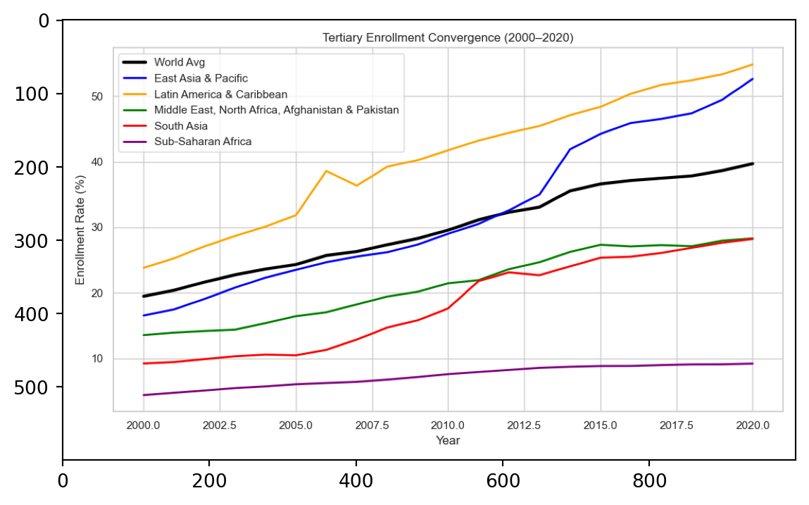
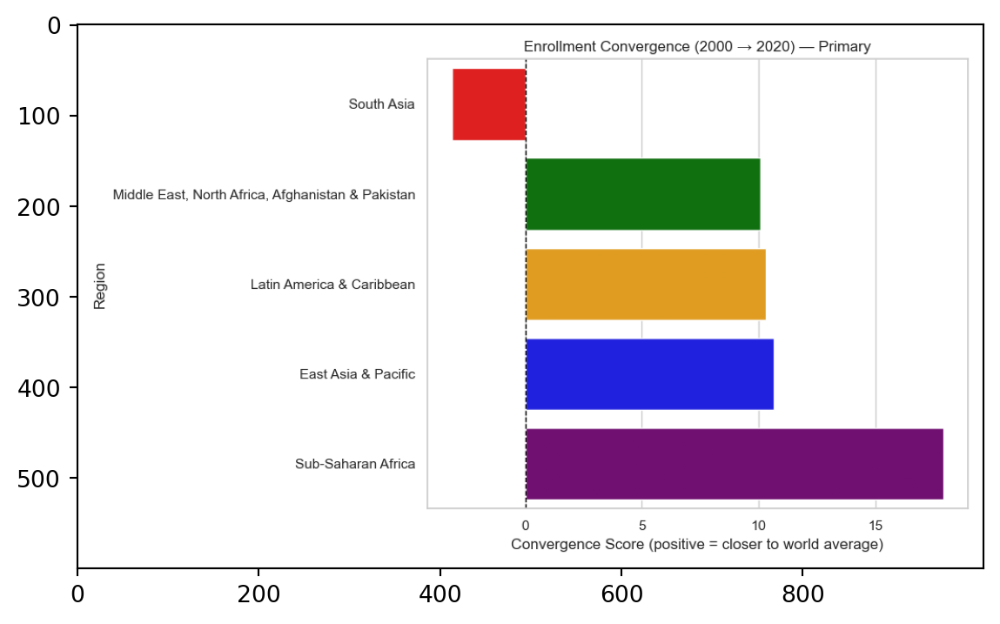
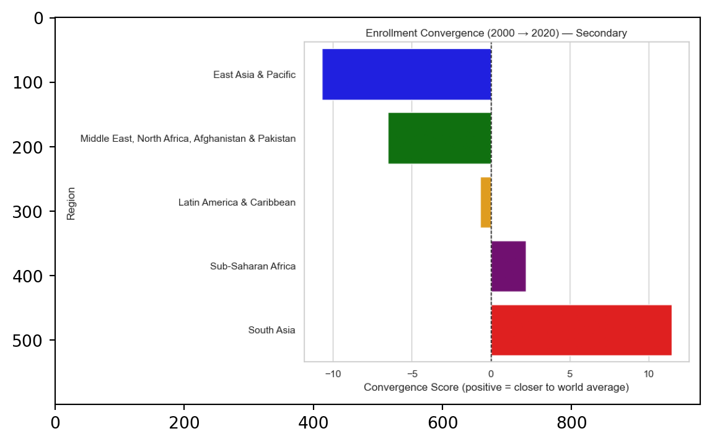

from matplotlib import pyplot as plt
import matplotlib.image as mpimg
# Convergence Lines
converge_line_primary = mpimg.imread("figures/primary_convergence_lines_colored.png")
converge_line_secondary = mpimg.imread("figures/secondary_convergence_lines_colored.png")
converge_line_tertiary = mpimg.imread("figures/tertiary_convergence_lines_colored.png")
# Convergence Bars
converge_bar_primary = mpimg.imread("figures/primary_convergence_barplot_colored.png")
converge_bar_secondary = mpimg.imread("figures/secondary_convergence_barplot_colored.png")
converge_bar_tertiary = mpimg.imread("figures/tertiary_convergence_barplot_colored.png")
# Gender Gap
gpi_primary = mpimg.imread("figures/gpi_trend_primary.png")
gpi_secondary = mpimg.imread("figures/gpi_trend_secondary.png")
gpi_tertiary = mpimg.imread("figures/gpi_trend_tertiary.png")Two Decades of Educational Change: Global Enrollment Trends and Gender Gap Reduction, 2000–2020
1 Introduction
The overarching goal of this project is to evaluate global progress in equitable access to education from 2000 to 2020. We focus on whether less-developed regions have been catching up to the world average in school enrollment and whether gender disparities in these regions have narrowed over time.
By combining regional and gender-disaggregated enrollment data, we assess whether international development efforts have contributed to convergence in both educational attainment and gender parity.
- add main findings *
2 Data Description & Cleaning
This project uses school enrollment data from the World Bank World Development Indicators (WDI) database. The dataset includes gross enrollment ratios for three education levels—primary, secondary, and tertiary—, total and by gender. The indicators are:
- Primary Education
- Total:
SE.PRM.ENRR - Male:
SE.PRM.ENRR.MA - Female:
SE.PRM.ENRR.FE
- Total:
- Secondary Education
- Total:
SE.SEC.ENRR - Male:
SE.SEC.ENRR.MA - Female:
SE.SEC.ENRR.FE
- Total:
- Tertiary Education
- Total:
SE.TER.ENRR - Male:
SE.TER.ENRR.MA - Female:
SE.TER.ENRR.FE
- Total:
Data were collected for all available countries over the period 2000–2020 using the wb.data.DataFrame() function. The raw dataset was saved as data/wdi_edu.csv.
2.1 Data Cleaning
Here are our preprocessing steps before analysis:
2.1.1 Removal of Missing Values
Rows with incomplete observations across any of the enrollment indicators were removed to ensure consistent time-series data. The resulting cleaned dataset (df_clean) contains only complete country-year records for all twenty years.
2.1.2 Standardizing Indicator Labels
A mapping dictionary was applied to replace WDI indicator codes with more descriptive names such as:
"SE.PRM.ENRR"→"primary""SE.PRM.ENRR.FE"→"primary_female""SE.SEC.ENRR.MA"→"secondary_male""SE.TER.ENRR"→"tertiary"
2.1.3 Filtering to Target Regions
We filtered our data down to keep only the major global regions:
- Sub-Saharan Africa
- South Asia
- Middle East, North Africa, Afghanistan & Pakistan
- Latin America & Caribbean
- East Asia & Pacific
- Europe & Central Asia
- North America
- World
2.1.4 Converting to Long Format
The cleaned regional dataset was reshaped from wide to long form:
- Year columns (e.g.,
"YR2000") were turned into a singleyearvariable. "YR"prefixes were removed and values were converted to integers.- Data were sorted by
Country,series, andyear.
2.1.5 Exporting Final Dataset
The final long-format dataset used for analysis was saved as data/wdi_edu_filtered_long.csv.
3 Data Analysis
add sql table
3.1 Enrollment Trends over Time 2000-2020
intro
plt.figure()
plt.imshow(converge_line_primary)
plt.figure()
plt.imshow(converge_line_secondary)
plt.figure()
plt.imshow(converge_line_tertiary)


analysis
3.2 Regional Convergence
To assess how each region compare to the global education level, we examine the convergence in primary, secondary, and tertiary school enrollment. For 2000 and 2020, we caculated each region’s gap from the world average and measured convergence as the reduction in the absolute distance to the global mean. A positive convergence score indicates the region is moving closer to the world enrollment level while a negative score indicates divergence.
Importantly, these convergence scores should be interpreted alongside previous line graphs. A negative score does not necessarily imply worsening outcomes as divergence may occur because a region’s enrollment rate is rising faster than the world average and surpassing it, not only because it is falling behind. Thus, evaluating both the direction of the gap and the trajectory of enrollment levels is essential for understanding the nature of convergence or divergence.
The bar plots summarize how five major world regions (East Asia & Pacific, Latin America & Caribbean, Middle East & North Africa, South Asoa, and Sub-Saharan Africa) progress across education levels. This helps reveal not only which regions are closing historical enrollment gaps but also where disparities have persisted or widened over the past two decades.
plt.figure()
plt.imshow(converge_bar_primary)
plt.figure()
plt.imshow(converge_bar_secondary)
plt.figure()
plt.imshow(converge_bar_tertiary)


analysis
3.3 Gender Gaps
intro
plt.figure()
plt.imshow(gpi_primary)
plt.figure()
plt.imshow(gpi_secondary)
plt.figure()
plt.imshow(gpi_tertiary)


analysis